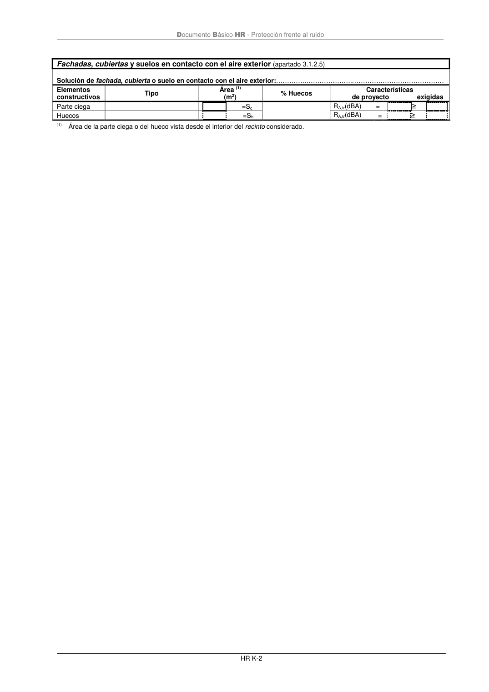

DB-HR · Página 76 · versión 2019-12-20
SHA256: a67baeca5138bb1f121f797d23a79a4557bd9ac4abacd954024893e05411eeab · página física 76 de 80 · métodos de encabezado
solo si están cotejados.
Formatos: Markdown · JSON de bloques · PDF p. 76 · imagen PNG
Documento Básico HR - Protección frente al ruido HR K-2 Fachadas, cubiertas y suelos en contacto con el aire exterior (apartado 3.1.2.5) Solución de fachada, cubierta o suelo en contacto con el aire exterior:………….………………….…………………………………… Elementos constructivos Tipo Área (1) (m2) % Huecos Características de proyecto exigidas Parte ciega =Sc RA,tr(dBA) = ≥ Huecos =Sh RA,tr(dBA) = ≥ (1) Área de la parte ciega o del hueco vista desde el interior del recinto considerado.
